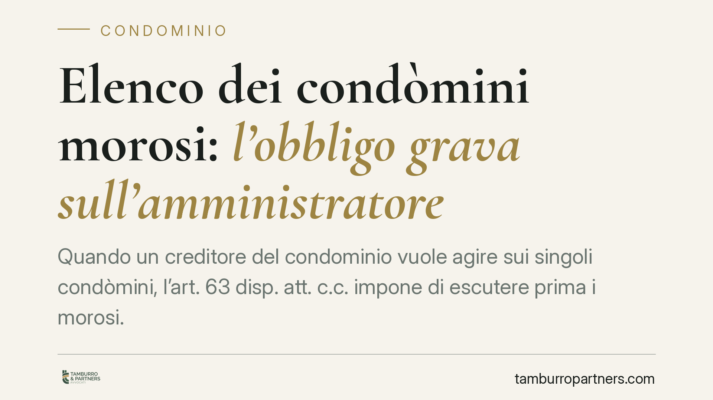

Elenco dei condòmini morosi: l'obbligo grava sull'amministratore
Quando un creditore del condominio vuole agire sui singoli condòmini, l'art. 63 disp. att. c.c. impone di escutere prima i morosi. Ma chi deve fornirgli i nominativi? L'orientamento giurisprudenziale più recente colloca l'obbligo di comunicazione in capo all'amministratore in proprio, con responsabilità personale in caso di omissione o ritardo. Una distinzione che incide su chi risponde dei danni.

Il contesto
Il condominio non paga un fornitore. Il creditore ottiene il titolo esecutivo e vuole rivalersi direttamente sui condòmini. Qui entra in gioco l'art. 63 disp. att. c.c.: il creditore non può aggredire indifferentemente chiunque, ma deve seguire un ordine preciso.
La domanda che genera contenzioso è pratica: per rispettare quell'ordine, il creditore ha bisogno dei nominativi dei morosi. Chi glieli deve dare? Il condominio come ente o l'amministratore come persona fisica? La risposta non è neutra, perché determina chi risponde dei danni se la comunicazione manca.
Inquadramento normativo
L'art. 63, comma 2, disp. att. c.c. stabilisce un beneficium ordinis: il creditore insoddisfatto può agire nei confronti dei condòmini in regola con i pagamenti solo dopo aver escusso quelli morosi. L'ordine è vincolante: prima i morosi, poi gli altri.
Per rendere possibile questa escussione graduale, il condominio deve mettere il creditore nelle condizioni di sapere chi sono i morosi. La norma non impone l'adempimento all'ente in modo generico: a comunicare i dati è chi gestisce la contabilità e detiene le informazioni, cioè l'amministratore. Questo si collega all'art. 1130 c.c., che attribuisce all'amministratore la tenuta dei registri e la riscossione dei contributi.
L'orientamento giurisprudenziale più recente colloca quindi l'obbligo di trasmissione in capo all'amministratore in proprio, non al condominio. Trattandosi di dati personali, la comunicazione trova base giuridica nell'art. 6, par. 1, lett. c) del Regolamento UE 2016/679 (GDPR): adempimento di un obbligo legale. Ciò la rende lecita, ma non illimitata.
Perché la distinzione conta
Affermare che l'obbligo grava sull'amministratore e non sul condominio non è un dettaglio formale.
Se l'obbligo fosse dell'ente, dell'eventuale danno risponderebbe il condominio con la propria massa patrimoniale, e dunque indirettamente tutti i condòmini. L'amministratore risponderebbe solo in via di rivalsa interna, nei limiti del mandato.
Collocando invece l'obbligo sulla persona dell'amministratore, l'omissione o il ritardo nella comunicazione diventano fonte di responsabilità personale diretta. Se il creditore, non avendo ricevuto i nominativi, subisce un pregiudizio — ad esempio l'impossibilità di recuperare il credito dal moroso ormai insolvente — può rivolgersi all'amministratore stesso.
È una responsabilità che segue la persona, non la carica. Chi ha gestito il condominio nel periodo rilevante resta esposto anche dopo la cessazione dell'incarico, per gli adempimenti omessi durante il mandato.
Il limite dei dati trasmissibili
L'obbligo non autorizza una comunicazione indiscriminata. Vale il principio di minimizzazione (art. 5, par. 1, lett. c, GDPR): si trasmettono solo i dati necessari a consentire l'escussione.
In concreto: nominativo del condòmino moroso, quota di competenza e importo insoluto. Non vanno comunicati dati ulteriori — recapiti personali non pertinenti, informazioni su altri condòmini in regola, documentazione estranea alla morosità. Una trasmissione eccedente espone l'amministratore a contestazioni sul fronte opposto, quello della protezione dati.
L'equilibrio è netto: comunicare il necessario, nei tempi utili, ma nulla di più.
Cosa fare in concreto
- Verificate la legittimazione del richiedente: la comunicazione presuppone un creditore con pretesa accertata, non una richiesta generica. Pretendete l'indicazione del titolo da cui deriva il credito.
- Rispondete senza ritardo: fissate internamente un termine breve per evadere la richiesta e conservate prova della data di invio e del contenuto trasmesso.
- Limitate i dati al necessario: nominativo, quota millesimale e importo dovuto. Nessuna informazione ulteriore o relativa a condòmini non coinvolti.
- Documentate la base giuridica: annotate che la comunicazione avviene in adempimento di obbligo legale ex art. 63 disp. att. c.c. e art. 6 GDPR, a tutela in caso di contestazioni.
- Aggiornate costantemente la situazione contabile: un registro dei pagamenti ordinato consente di individuare i morosi con precisione e di rispondere in modo tempestivo e verificabile.
---
*Contributo informativo a cura di Tamburro & Partners Avvocati - Avv. Giuseppe Tamburro. Non costituisce parere legale.*
Ogni condominio ha una storia a sé.
Se gestisci un'amministrazione e vuoi un confronto su una specifica questione condominiale, scrivi allo studio. Ti rispondiamo entro un giorno lavorativo.